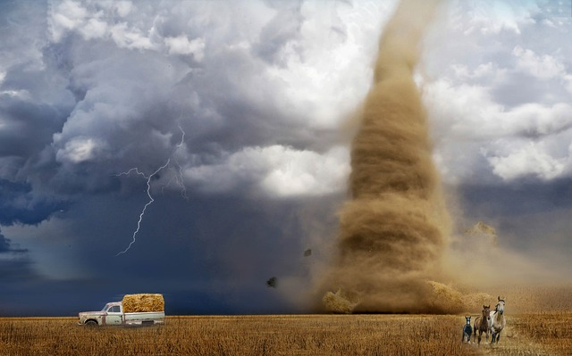
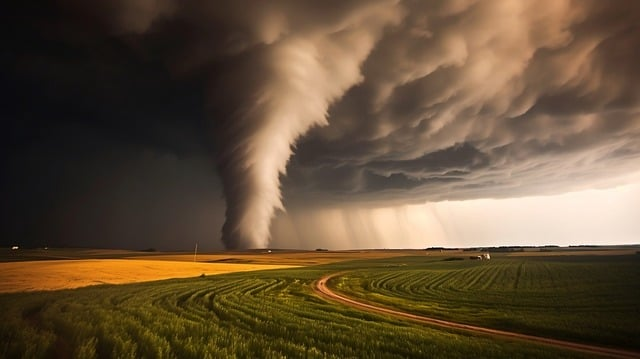

Los síntomas más típicos son alteraciones en el sueño y en el apetito, sentimiento de tristeza o melancolía, cansancio o fatiga, falta de energía, agitación interna o apatía. También somatizaciones, como dolores de cabeza, migrañas, tensión, o dolores musculares.
 Tener varios días con presencia de neblinas puede afectar la salud mental y el estado de ánimo, y también manifestar patologías respiratorias y circulatorias según indican varios profesionales de la salud.